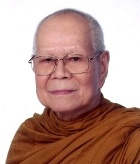

Наш учитель
Бхиккху Сопако Бодхи (Ачан Собин Намто), один из первых учителей в Обществе Медитации Прозрения в Барре, родился в 1932, в деревне Вангпладо, Таиланд. Будучи еще очень молодым, он переехал в Бангкок, чтобы стать монахом и изучить учение Будды.
В девятнадцать лет он совершил семимесячный медитационный затвор с великим мастером випассаны Чао Кхун Бхаванапирама Тхера, который обучил его скрупулезному методу развития внимательности.
Позже, в течение какого-то времени, он жил в уединение как лесной монах, противостоя всем опасностям азиатских джунглей, включая тигров и ядовитых змей.
В Таиланде и Бирме, достопочтенный Сопако изучал випассану с самыми известными учителями эпохи, включая Махаси Саядо. Всего в двадцать четыре года, он сам стал признанным учителем випассаны и абхидхаммы («абхидхамма» - это буддийская метафизика). Много лет достопочтенный Сопако преподавал в знаменитой Пятой Секции монастыря Ват Маха Дхату в Бангкоке, а также во многих других храмах. Позже он основал и руководил медитационным центром в южном Таиланде.
В 1972 он стал Аббатом первого тайского буддийского храма, построенного в Соединенных Штатах Америки, в Северном Голливуде, Калифорния. Четыре года спустя он основал Ват Буддаварарам - буддистский храм в Денвере, который по его предположению будет способствовать распространению медитации прозрения.
Среди многих благодарностей, достопочтенный Сопако был отмечен мэром Лос-Анджелеса и Королем Таиланда за его работу по распространению буддизма на Западе.
На данный момент достопочтенный Сопако проживает в родной деревне Вангпладо, Таиланд, где он строит медитационный центр и ступу для реликвий Будды. Ступа или «пагода», повторяет известную буддийскую святыню из Бодхгая, Индия, которая отмечает место, где Будда достиг просветления.
Студенты и друзья достопочтимого Сопако отмечают его теплоту, сострадание и юмор, но также и его бескомпромиссную приверженность оригинальному учению Будды. Многими он рассматривается как один из ведущих специалистов в мире по випассане и абхидхамме. Его неустанные усилия по распространению этих знаний принесли неоценимую пользу миру.